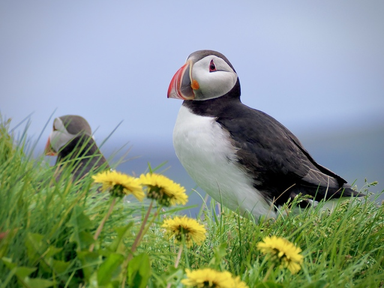
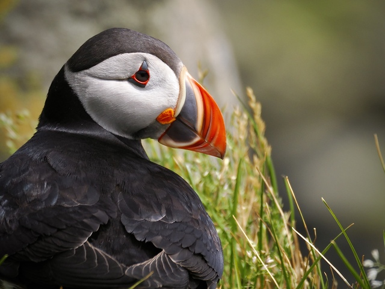
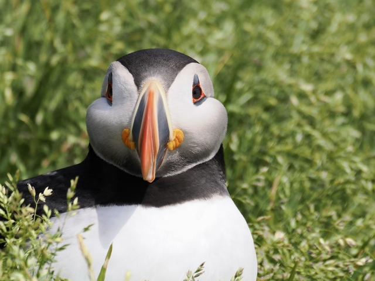
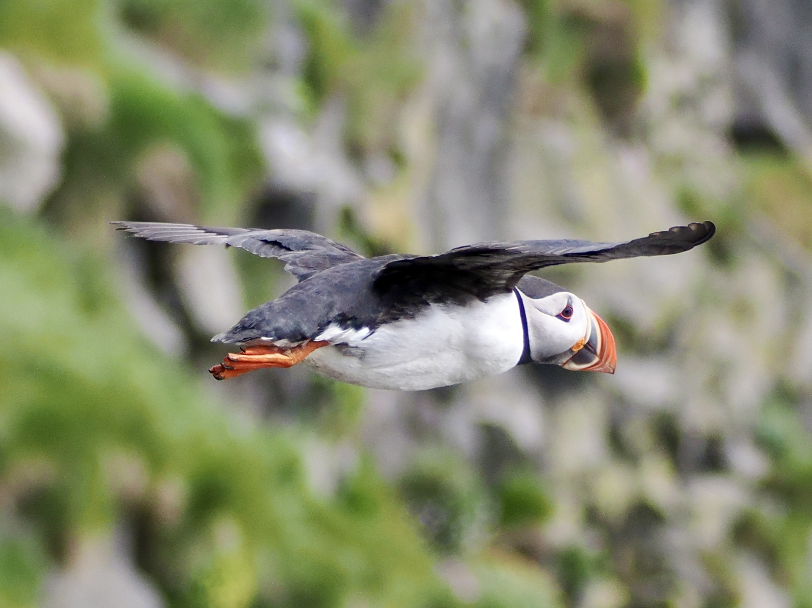

Atlantic Puffin
Fratercula arctica
Order: Charadriiformes
Family: Alcidae

The famous black-and-white puffin with triangular eyes and a thick red bill. Spends much of its life out at sea, only coming to shore to breed. Nests on cliffs, where they burrow into the ground with wobbly steps and raise a single puffling.

Has no fear of humans, allowing close approach. Take some time to admire the pore-like holes on the base of the bill. An orange rosette sits nicely on the corner of the bill. This funky appearance gives it the name "clown of the sea", though I think the true clown is the Harlequin Duck with a funny appearance and chaotic lifestyle on turbulent waters.

Puffins have relatively weak wings that enable aerial flying nonetheless. These wings are adapted for "flying" underwater to catch fish like sandeels though. Fun fact: "puffin" is originally a name for shearwaters, but somehow moved to describe puffins (genus Fratercula).

For some reason I think puffins fly like a helicopter. On the cliffs of Dyrhólaey the gust speeds go up to 50 km/h. Many seabirds struggle to land, and it was funny to watch. No shame on them though; I also struggled to walk against the wind in the same conditions.

As cute as these puffy cheeks are, puffins are a bit overrated. There is so much puffin merch on the streets of Reykjavik, but how often does one find merch of a Razorbill, or Shag? How many people know a Glaucous Gull better than "seagull"? Also, the national bird of Iceland is the Gyrfalcon, not the Puffin!